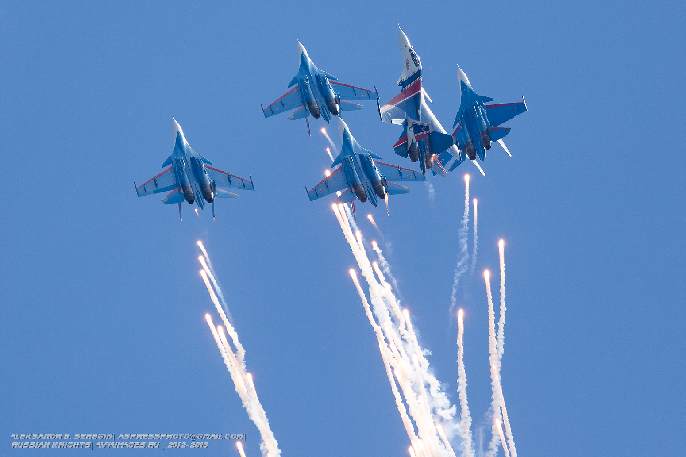

главная страница
Русские витязи и стрижи
"Витязи" и "Стрижи" появились практически одновременно – 5 апреля и 6 мая 1991 года. Название обеих групп придумали сами пилоты. И те, и другие базируются на Кубинке в составе Центра показа авиационной техники имени И. Н. Кожедуба.
"Стрижи" летают на МиГ-29. Эти самолеты поступили в Кубинку в 1983 году, до этого в распоряжении пилотов авиацентра были МиГ-21 и МиГ-23. В то время летчиков на четырех "мигах" не называли пилотажной группой, употреблялось название "ромб на МиГ-29". В 1991 году началась новая эпоха.
"Стрижи" были сформированы из лучших пилотов на базе 234-го гвардейского Проскуровского истребительного авиаполка, который в войсках всегда называли "показным". В его задачи входила не только защита воздушных рубежей Москвы, но и демонстрация возможностей передовой авиационной техники.
Нынешнюю раскраску "Стрижей" Российская самолетостроительная корпорация "МиГ" предложила в 2000 году. Так появились очертания гигантских синих птиц сверху и снизу.

Интересный факт
В августе 1993 года "Витязей" пригласили на канадскую авиабазу Эбботсфорд, где их показательные выступления завершились небольшим курьезом: канадские летчики поспорили с русскими о том, что Су-27 как истребитель уступает их самолету CF-18 "Хорнет". Спор разрешился на глазах у двухсот тысяч зрителей – "Витязи" в тренировочном бою одержали победу над "Хорнетами", доказав непревзойденные качества своих боевых машин.
"Русские витязи" – единственная в мире авиационная группа, показывающая высший пилотаж на тяжелых строевых истребителях Су-27. Их самолеты, как и у "Стрижей", не отличаются от строевых машин ничем, кроме окраски.
Су-27 поступили на вооружение 1-й авиационной эскадрильи Центра показа авиационной техники в мае 1989 года. Сначала пилоты тренировались в составе пары, тройки, а затем и четверки машин в строю "ромб". В начале 1991-го был окончательно сформирован состав пилотажной группы из шести самолетов.
Первое выступление "Витязей" состоялось через четыре с половиной месяца после официального дня рождения группы, 24 августа 1991 года, на первом польском авиашоу в Познани. Тогда с программой одиночного пилотажа выступил командир группы Владимир Баженов.
Этот визит стал отправной точкой в создании неповторимого имиджа группы. Меньше месяца потребовалось специалистам ОКБ "Сухого" на разработку единого дизайна и раскраску всех истребителей группы.

Простой, сложный и высший пилотаж, которыми любуются миллионы зрителей, имеет свой практический смысл. Каждая фигура, которую "выписывает" в небе самолет, предназначена для ухода от противника.
Цель атакующего – занять выгодное исходное положение и поразить преследуемый самолет, цель того, кого догоняют, – уйти из-под атаки, увернуться от ракеты, по возможности зайти "в хвост" нападающему. Летчик должен спокойно чувствовать себя в воздухе, быть полностью уверенным в своем самолете и в совершенстве им владеть.
Имеет практический смысл и работающий на зрелищность пилотажа отстрел ложных тепловых целей, более известных как тепловые ловушки – сноп ярких огней, которые выпускают самолеты при пролете группой или в одиночку. В реальном бою этот "салют" необходим для того, чтобы сбить с толку инфракрасные головки самонаведения ракет неприятеля.
"Возьмем в качестве примера фигуру "Бочка" (поворот самолета вокруг продольной оси на 360 градусов). Если она одиночная, то это базовая фигура, выполняемая всеми летчиками. Если групповая – то это уже сложно, делают ее только пилотажники", – рассказывает командир звена "Русских витязей", военный летчик 1 класса Сергей Еременко.
Когда "Бочку" делает авиагруппа, мастерство проявляется в синхронном выполнении этой фигуры, одновременно начатой и законченной, в четком выдерживании своего места в строю и положения самолетов в пространстве.
Одиночная "Бочка" в бою дает летчику возможность внезапно поменять свое пространственное положение, уйти от ракеты противника.
Для воздушной схватки более актуальна вариация под названием "Кадушка", когда самолет не просто вращается вокруг своей оси, а движется немного "размазанно", одновременно перемещаясь по окружности.
Фигуры высшего пилотажа в самом общем виде разделяются на одиночные и групповые, при этом групповые выполняются в различных строях: "Пирамида", "Конверт", "Стрела", "Колонна".
Когда самолет пилотируется одиночно, летчик демонстрирует все, на что способна машина, показывает ее возможности. При выполнении пилотажа группой должно быть сохранение строя, синхронность, определенное построение маневров.
Пилотаж должен быть энергичным, сжатым, сконцентрированным, промежутки времени между различными фигурами и перестроениями минимальные.
Именно так составляется картина пилотажа, рождается гармоничный рисунок и смысл полета, чтобы активное маневрирование самолетов не превращалось в "мельтешение", а раскрывало всю красоту, управляемость и опасную силу боевых машин.
Интересный факт
При выполнении пилотажа все летчики смотрят только на самолет ведущего. Они держат одну плоскость, ориентируясь только на него. Именно ведущий создает рисунок пилотажа, отвечает за все параметры выполняемых фигур, за построение, а задача ведомых – выдержать свое место в строю.

Один из наиболее узнаваемых символов "Стрижей" и "Русских витязей" – гигантский ромб, состоящий из четверки МиГ-29 и пяти Су-27. Этот пилотажный строй получил имя "Кубинский бриллиант" за свои четкие грани, очерченные как будто по линейке.
Впервые четверка "Русских витязей" совместно с шестеркой "Стрижей" выполнила полет в едином строю в составе десяти самолетов к 65-летию образования Центра показа авиационной техники в марте 2003 года.
В 2004 году в комплекс показов был включен совместный полет пилотажных групп в составе девяти самолетов (пять Су-27 и четыре МиГ-29) в строю "ромб" с выполнением полного комплекса фигур высшего пилотажа. Этот факт стал мировым рекордом в истории авиации.
Уже несколько лет подряд "Стрижи" и "Витязи" летают девяткой над Красной площадью 9 мая и выступают таким образом на многих праздниках.